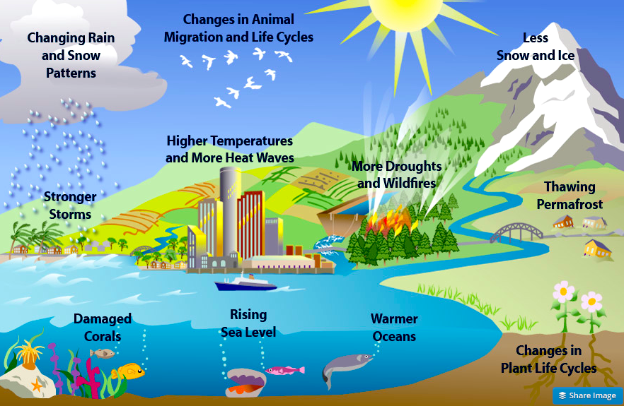

Global warming is a term used for the observed century-scale rise in the average temperature of the Earth's climate system and its related effects. Scientists are more than 95% certain that nearly all of global warming is caused by increasing concentrations of greenhouse gases (GHGs) and other human-caused emissions. My main purpose of developing this website of Global Warming Awareness is to bring awareness to other people and to collectively try to stop global warming: to make people aware of the social, political and economic consequences that climate change may have on huge parts of all living things including mankind. Did you ever thought about the wide consequences that global warming effects will bring to our own lives? Changes that would affect the planet’s environment, and will also affect directly the populations!
Global warming occurs when carbon dioxide (CO2) and other air pollutants and greenhouse gases collect in the atmosphere and absorb sunlight and solar radiation that have bounced off the earth’s surface. Normally, this radiation would escape into space—but these pollutants, which can last for years to centuries in the atmosphere, trap the heat and cause the planet to get hotter. That's what's known as the greenhouse effect. In the United States, the burning of fossil fuels to make electricity is the largest source of heat-trapping pollution, producing about two billion tons of CO2 every year. Coal-burning power plants are by far the biggest polluters. The country’s second-largest source of carbon pollution is the transportation sector, which generates about 1.7 billion tons of CO2 emissions a year.
Each year, scientists learn more about the consequences of global warming, and many agree that environmental, economic, and health consequences are likely to occur if current trends continue. Here’s just a smattering of what we can look forward to: Melting glaciers, early snowmelt, and severe droughts will cause more dramatic water shortages and increase the risk of wildfires in the American West. Rising sea levels will lead to coastal flooding on the Eastern Seaboard, especially in Florida, and in other areas such as the Gulf of Mexico. Forests, farms, and cities will face troublesome new pests, heat waves, heavy downpours, and increased flooding. All those factors will damage or destroy agriculture and fisheries. Disruption of habitats such as coral reefs and Alpine meadows could drive many plant and animal species to extinction. Allergies, asthma, and infectious disease outbreaks will become more common due to increased growth of pollen-producing ragweed, higher levels of air pollution, and the spread of conditions favorable to pathogens and mosquitoes.
-Melting glaciers, early snowmelt, and severe droughts will cause more dramatic water shortages and increase the risk of wildfires in the American West. -Rising sea levels will lead to coastal flooding on the Eastern Seaboard, especially in Florida, and in other areas such as the Gulf of Mexico. Forests, farms, and cities will face troublesome new pests, heat waves, heavy downpours, and increased flooding. All those factors will damage or destroy agriculture and fisheries. Disruption of habitats such as coral reefs and Alpine meadows could drive many plant and animal species to extinction. Allergies, asthma, and infectious disease outbreaks will become more common due to increased growth of pollen-producing ragweed, higher levels of air pollution, and the spread of conditions favorable to pathogens and mosquitoes.
Global warming can reach levels of irreversibility, and increasing levels of global warming can eventually reach an extinction level where humanity and all life on earth will end. In this book, irreversible global warming is defined as a continuum of increasing temperature that causes the global climate to rapidly change until those higher temperatures becomes irreversible on practical human time scales. The eventual temperature range associated with triggering and marking the beginning of the irreversible global warming processes is an increase in average global temperature of 2.2°-4° Celsius (4°-7.2° Fahrenheit) above preindustrial levels.
Credits: Alhaji, Jalloh. “Image Stand In” Google.,https://www.nrdc.org/stories/global-warming-101 Github Web. 12 Nov. 2019